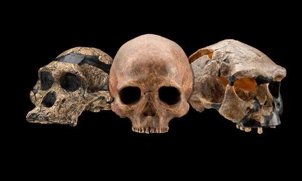
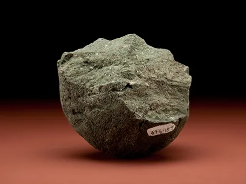
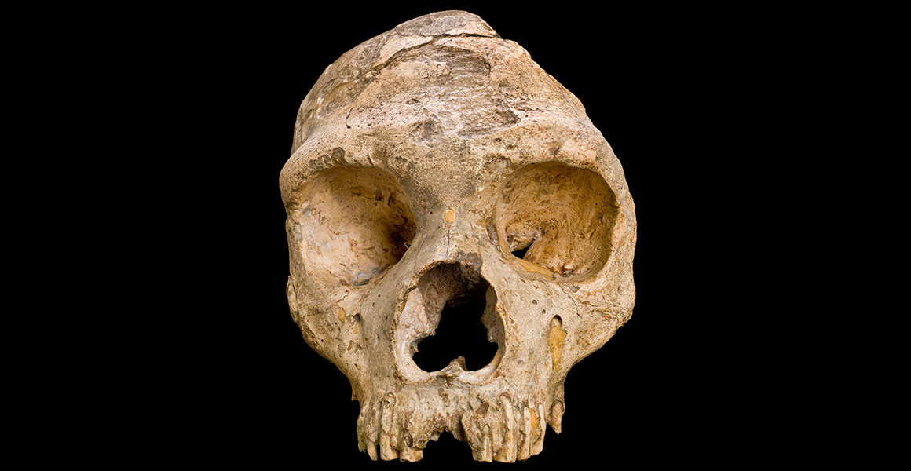

01 · Observar
¿Qué rasgos cambian y cuáles se conservan?
Compara forma de la bóveda, proyección facial y tamaño relativo. Separa lo que ves de la explicación que propones.
Explora el registro fósil sin perderte en él.
Cincuenta y dos entradas, treinta y una vistas de trabajo y cinco rutas para comprender quiénes vivieron, dónde, cuándo y cómo lo sabemos.
Molde craneal de Australopithecus afarensis · Naturmuseum Senckenberg · Daderot, CC0.
Al recorrer este atlas podrás
Las imágenes no son decoración: cada una abre una tarea breve de observación, interpretación y contraste con los datos del atlas.

Compara forma de la bóveda, proyección facial y tamaño relativo. Separa lo que ves de la explicación que propones.

Identifica huellas de modificación y plantea al menos una interpretación alternativa antes de atribuir una función.

Relaciona anatomía, datación y ADN antiguo. Señala qué afirmaciones dependen de una sola línea de evidencia.
Accede directamente a cualquier herramienta. Cada destino conserva su bloque y activa una única vista de trabajo.
Explora especies humanas, yacimientos, dispersión, cronología, paleogenómica, paleoproteómica, debates científicos y recursos docentes verificados.
No todo hallazgo es consenso; no toda semejanza implica parentesco directo.
Explora el registro fósil humano como una red de evidencias: especies, yacimientos, cronología, clima, debates, ADN antiguo y bibliografía verificable.

La portada parte de un molde craneal fotografiado, no de una ilustración: una señal visual directa para entrar desde evidencia material.
La portada queda pensada como mesa de trabajo: primero decides qué quieres hacer, después el atlas te lleva a una vista operativa con filtros, fuentes y producto didáctico.
El atlas ya no empieza como un índice largo: cada perfil abre una ruta corta, con objetivo claro y sin obligar a recorrer todas las herramientas.
Ordena, localiza y entrega una ficha breve con evidencia y cautela.
Entra directamente en materiales, secuencias, evaluación y modo simplificado.
Formula problemas con yacimientos, datación, debates y bibliografía reciente.
Construye una explicación visual por continentes, imágenes reales y glosario.
PaleoBot funciona mejor si se usa como un laboratorio de evidencias: primero sitúa tiempo y espacio, después abre fichas, compara hipótesis y termina con un producto verificable.
Construye una explicación breve con tiempo, lugar, evidencia y cautela.
Convierte el atlas en una situación de aprendizaje con producto evaluable.
Formula problemas abiertos con bibliografía reciente y evidencias contrastables.
Explica sin simplificar: imagen real, mapa, glosario y ruta visual.
Este compás organiza la navegación en cuatro preguntas científicas. Cada tarjeta abre una vista clave y ayuda a distinguir cronología, territorio, evidencia material e incertidumbre interpretativa.
PaleoBot combina atlas, laboratorio, biblioteca y cuaderno de aula. Esta guía reduce la entrada inicial: cada perfil abre solo las vistas más útiles para empezar con una pregunta clara.
Primero ordena el tiempo, después ubica especies y cierra con una ficha breve usando datos verificables.
Entra por materiales, secuencia, rúbrica y banco de actividades para convertir el atlas en tarea evaluable.
Parte de yacimientos, debates, datación y bibliografía para formular problemas acotados con incertidumbre explícita.
Usa una ruta visual: África, Asia, Europa, paleogenómica y contexto ambiental. El objetivo es comprender sin simplificar en exceso.
Un apartado específico para distinguir evidencia genética directa, inferencia poblacional y límites de preservación. Está pensado para trabajar neandertales, denisovanos, sapiens arcaicos y fósiles sin ADN recuperado sin confundir hipótesis con prueba directa.
Todas las vistas y herramientas avanzadas están disponibles. Usa este modo para seminarios, TFG/TFM, discusión bibliográfica y análisis comparado.
Atlas paleoantropológico · ULPGC · Formación permanente
Reconocerás los principales taxones homininos y su distribución en el continente africano a lo largo del tiempo geológico.
Distinguirás entre dato fósil directo, inferencia razonada e hipótesis científica debatida.
Relacionarás el registro paleoantropológico con el paleoambiente africano: clima, geografía y tectónica.
Formularás preguntas científicas a partir de evidencias incompletas y comprenderás por qué la evolución humana no es una escalera lineal.
¿Cómo sabré si he aprendido? — Rúbrica de competencia
| Criterio | Nivel básico | Nivel avanzado | Nivel experto |
|---|
Elige un momento temporal
Usa el filtro de tiempo para situarte en un período concreto (p.ej. hace 2 Ma). ¿Qué taxones esperas encontrar y en qué regiones?
Compara 3 taxones
Elige 3 especies, compara un rasgo y formula una pregunta que las fichas no respondan por sí solas.
Producto esperado
Un párrafo con: un dato observable, una inferencia razonada y una duda metodológica.
La búsqueda, el clado o el rango temporal han dejado la cronología sin registros. Puedes ampliar el intervalo temporal o limpiar todos los filtros.
Los filtros actuales ocultan todos los taxones de este diagrama. Restablece la búsqueda para volver a ver los clados completos.
Hipótesis didáctica con nodos ancestrales, ramas bifurcadas y eje temporal proporcional. Cada nodo resume la sinapomorfía o cambio evolutivo que define la divergencia.
Lee de izquierda a derecha desde 23 Ma hasta el presente. La posición horizontal de ramas y nodos es proporcional al tiempo.
Haz clic en un nodo ancestral para ver la sinapomorfía o rasgo derivado que justifica la separación del clado.
El deslizador temporal atenúa los taxones fuera de rango y conserva la estructura para no perder la hipótesis completa.
Sinapomorfía
Los nodos internos representan ancestros hipotéticos. Al pulsarlos verás el carácter derivado que se usa aquí para explicar la divergencia.
Superposición de rangos taxonómicos con eventos climáticos, vegetacionales y tectónicos para leer la evolución como respuesta adaptativa a cambios ambientales de larga duración.
Superposición de proxies paleoclimáticos actualizados (2019–2023): δ¹⁸O del stack CENOGRID (Westerhold et al. 2020 Science), temperatura PAGES 2k (Consortium 2019 Nature Geoscience), eventos D-O (Menviel et al. 2020 Nature Reviews Earth & Environment) y estadios isotópicos marinos (Railsback et al. 2015) sobre la tabla cronoestratigráfica ICS v2023/09, con los rangos cronológicos de los homininos. Permite leer la evolución humana como respuesta adaptativa a cambios climáticos documentados instrumentalmente y por proxies.
Stack CENOGRID (Westerhold et al. 2020 Science). Proxy astronómicamente datado de volumen de hielo y temperatura profunda oceánica.
Núcleo de hielo antártico (NOAA NCEI 2022) — temperatura relativa y CO₂ atmosférico. Base: Extier et al. 2018.
Consortium (2019) Nature Geoscience. Reconstrucción multidecadal CE 1–2000. Referencia: CE 1961–1990. Neukom et al. 2019 Nature.
Impares = interglaciares cálidos · Pares = glaciares fríos. Resolución variable por escala.
La secuencia se separa en carriles continentales para distinguir con claridad el núcleo africano del proceso, las ocupaciones europeas y las diversificaciones asiáticas. Un mismo taxón puede repetirse en más de un carril si su registro o su dispersión es transcontinental.
Es el foco originario del bipedismo, de los australopitecos, de Paranthropus, de los primeros Homo y de las formas más antiguas de H. sapiens.
Concentra ocupaciones del Pleistoceno y linajes de Homo asociados a adaptaciones frías, incluida la trayectoria que desemboca en neandertales.
Visualiza la expansión oriental de Homo, la persistencia de linajes arcaicos y las radiaciones insulares del sudeste asiático.
No añade nuevos taxones fósiles al atlas: explica el poblamiento reciente por Homo sapiens, las evidencias pre-Clovis y las rutas de entrada.
Vista específica para estudiar África como sistema: regiones fosilíferas, corredores ambientales, métodos de datación y fuentes primarias. El mapa no es decorativo: organiza la evidencia por focos de investigación y conecta cada región con los taxones visibles del atlas.
Empieza por el foco geográfico: Rift, Chad, Magreb, Sudáfrica o corredores de dispersión.
Lee el sitio como unidad de evidencia: estratigrafía, asociación faunística y conservación.
Comprueba si la edad procede de Ar-Ar, U-Pb, ESR, OSL, biocronología o correlación.
Distingue consenso, debate y revisión antes de transformar el dato en hipótesis evolutiva.
América se incorpora como módulo de dispersión humana, no como continente con especies propias de homininos fósiles. La vista enseña a leer huellas, campamentos, industria lítica y cronologías en disputa sin convertir cada indicio en certeza.
La pregunta americana es de dispersión sapiens, no de evolución de especies locales.
Huellas, restos líticos, huesos modificados y ADN no tienen el mismo peso interpretativo.
Compara pre-Clovis, Clovis y ocupaciones sudamericanas sin memorizar una fecha única.
Aprende a distinguir aceptación amplia, debate activo y revisión metodológica.
Asia no es solo una extensión de la salida de África. La vista separa oleadas tempranas de Homo, ocupaciones orientales, mezcla denisovana, mosaicos chinos del Pleistoceno medio y radiaciones insulares del sudeste asiático. El objetivo es evitar flechas simples y enseñar a leer barreras, refugios, ADN, paleoproteómica y ausencia de datos.
Comienza por Cáucaso, Java y China: presencia de Homo fuera de África antes de sapiens.
Asia conserva linajes arcaicos y mosaicos morfológicos que no encajan en una escalera simple.
Denisovanos, Harbin, Xiahe y genomas actuales obligan a separar ADN directo, proteína e inferencia.
Flores y Luzón muestran que el mar, el aislamiento y el enanismo insular cambian las preguntas.
Europa se trabaja como un mosaico de poblamientos, no como una cuna alternativa. La vista conecta hominoideos miocenos, Dmanisi como puerta caucásica, Atapuerca, el Pleistoceno medio europeo, neandertales y genomas sapiens tempranos. Cada caso obliga a separar dato, hipótesis y cautela.
Europa incluye hominoideos miocenos, pero eso no demuestra un origen europeo de los homininos.
Sima del Elefante, Gran Dolina y Sima de los Huesos responden preguntas distintas.
Neandertales, heidelbergensis y antecessor no deben mezclarse en una escalera simple.
La mezcla sapiens-neandertal es poblacional, no una explicación directa de rasgos aislados.
Vista global arriba y lentes regionales debajo. Haz clic en un marcador o en la lista lateral para fijar la selección y ver la ubicación sin solapamientos.
Zoom in/out hacia el cursor. En móvil, usa pellizco con dos dedos.
Mantén pulsado y arrastra para desplazar el mapa en cualquier dirección.
Haz clic en un marco de región o en los botones de abajo para enfocar y ampliar esa zona automáticamente.
El botón ⊕ de los controles devuelve la vista global al instante.
El mapa global sirve como orientación general. Estas lentes amplían las regiones donde realmente se concentra el registro fósil para que los yacimientos no se solapen visualmente.
Vista invertida del catálogo: cada yacimiento resume taxones recuperados, secuencia estratigráfica, métodos de datación y valor metodológico para reconstruir la evolución humana.
Controversias abiertas agrupadas con tesis enfrentadas, argumentos nucleares y bibliografía reciente para seminarios de argumentación científica. La actualización es manual mediante el bloque de datos del script.
Elige una tesis y recorre los tres actos: preparación → argumentación cronometrada → refutación. Al terminar, genera un ticket de salida exportable con tu argumento y autoevaluación.
Perfil estratigráfico interactivo de tres yacimientos clave. Selecciona una capa para ver litología, datación, fauna asociada y taxones humanos. Activa el Modo inferencia para practicar ordenación temporal antes de revelar edades.
Manipula variables de preservación y observa qué partes del esqueleto sobrevivirían al registro fósil. Basado en datos empíricos de supervivencia esquelética documentados en la literatura.
Red de flujo génico entre linajes humanos con evidencia paleogenómica documentada. Pulsa cada evento para ver porcentaje de herencia, período temporal y rasgos adaptativos asociados.
Panel específico para linajes con información genómica disponible o inferida: introgresión, árbol de distancias genéticas, genes funcionales clave y límites de preservación. Distingue evidencia directa, inferencia y cautela interpretativa.
Cuando el ADN antiguo ya se ha degradado, las proteínas conservadas en el esmalte y el hueso permiten todavía situar un fósil en el árbol humano. Es la técnica que en 2025 puso cara a los denisovanos. Aquí se explica qué puede —y qué no puede— decirnos.
Idea clave: el ADN dice mucho pero dura poco; las proteínas dicen poco pero duran mucho. Son complementarias.
El ADN antiguo (banda verde) se agota pronto: la mayoría de genomas arcaicos no superan los ~430 ka (neandertales y denisovanos de Atapuerca y Siberia). Las proteínas del esmalte (banda dorada) siguen legibles mucho más atrás: antecessor ~949 ka, Gigantopithecus ~1,9 Ma. Por eso para los homininos africanos antiguos —sin ADN— las proteínas son a menudo la única vía molecular.
Toca una ficha del atlas para abrirla con su información completa.
Las proteínas del esmalte (Gran Dolina, Atapuerca) mostraron que antecessor no es nuestro antepasado directo, sino un linaje hermano cercano del último ancestro común de sapiens, neandertales y denisovanos. Welker et al., Nature 2020.
El cráneo casi completo descrito como Homo longi resultó ser un denisovano: 95 proteínas con 3 variantes denisovanas, más ADN mitocondrial del sarro dental. Por fin un rostro para los denisovanos. Fu et al., Science/Cell 2025.
Más de 4.000 aminoácidos de 51 proteínas la identificaron como denisovana; la proteína amelogenina Y confirmó además que era un varón. Tsutaya et al., Science 2025.
El simio gigante del sur de China, conocido casi solo por dientes. Sus proteínas del esmalte —las más antiguas leídas en un homínido— lo situaron como pariente de los orangutanes. Welker et al., Nature 2019.
No incluido en el catálogo (no es de nuestro linaje).El primer denisovano fuera de Siberia, en la meseta tibetana a 3.280 m, identificado por colágeno antes de cualquier ADN. Mostró que los denisovanos vivían en gran altitud. Chen et al., Nature 2019.
Rigor: una secuencia de proteína es una prueba parcial. Confirma parentesco amplio, pero no sustituye al ADN ni a la anatomía. Las mejores conclusiones combinan las tres líneas —como en Harbin, donde proteínas, ADN mitocondrial y morfología apuntaron al mismo resultado.
Vista fotográfica del material tipo o ejemplar de referencia, con escala gráfica, número de catálogo cuando está cargado y acceso directo a búsqueda de imágenes en Wikimedia Commons.
Matriz por intervalos de 100 ka que marca qué especies están presentes y qué pares pudieron coexistir en una misma región amplia. Responde de forma directa a cuántos linajes convivían en una ventana temporal.
Línea de tiempo de cambios de nombre, reclasificaciones y debates nomenclaturales. Combina hitos históricos clásicos con controversias recientes para estudiar cómo cambia la ciencia.
Mapa animado y pausado por el usuario: activa oleadas migratorias, cambia la velocidad y observa qué linajes aparecen por región en el momento seleccionado, con paleoambiente de fondo.
Arrastra especies al lienzo, conéctalas como hipótesis y compara tu árbol con tres modelos de referencia. El objetivo es aprender a justificar relaciones, no memorizar una figura fija.
Selecciona un yacimiento, examina datos brutos simulados y elige un método. El sistema devuelve resultado, margen de error y explicación si el método no es adecuado para esa edad o material.
Rutas temáticas predefinidas con narración evolutiva entre fichas · Haz clic en «Ficha completa» para explorar
Cuatro puertas de entrada para adaptar el atlas a edades, fines formativos y profundidad de análisis sin cambiar la base científica del aplicativo.
Ordenar pocos taxones, localizar evidencias en el mapa y distinguir dato, inferencia y opinión con lenguaje accesible.
Convertir el atlas en una secuencia de aula con objetivos, tarea, evidencia de aprendizaje y criterios de evaluación.
Analizar evidencias, métodos, consenso e incertidumbre mediante comparación de fichas, filogenia y debates.
Explorar sin itinerario previo, relacionando tiempo, espacio y parentesco para evitar una lectura lineal de la evolución humana.
Selecciona un itinerario para comenzar
Cada ruta te guía por una secuencia de especies con narración evolutiva